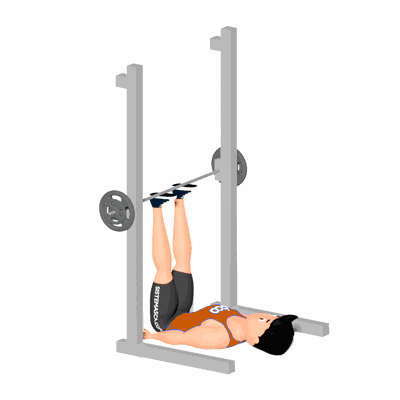

Leg Press Vertical no Smith

O exercício trabalha o fortalecimento e hipertrofia dos músculos do quadríceps, mas também indiretamente os músculos do glúteo, posteriores da coxa e panturrilhas.
Ficha Técnica
Tipo: Musculação
Grupo Muscular: Perna
Aparelho: Nenhum
Músculos: Nenhum
Como realizar
- Coloque a barra a cerca de 90 cm do chão e com os pés na barra na largura do quadril;
- Estenda as pernas para travar a fim de soltar as travas e, em seguida, permita que a barra desça dobrando os joelhos e flexionando os quadris;
- Coloque os pés na barra e expire enquanto estende os joelhos e quadris;
- Lentamente abaixe as pernas para a posição inicial e repita pelo número de repetições determinada pelo professor(a).
 RC STORE
RC STORE